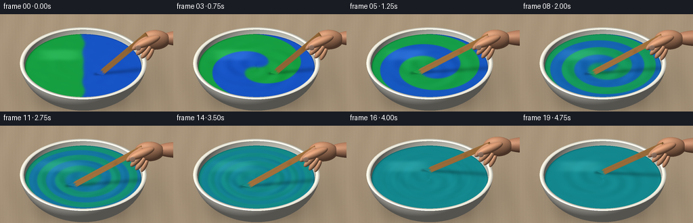
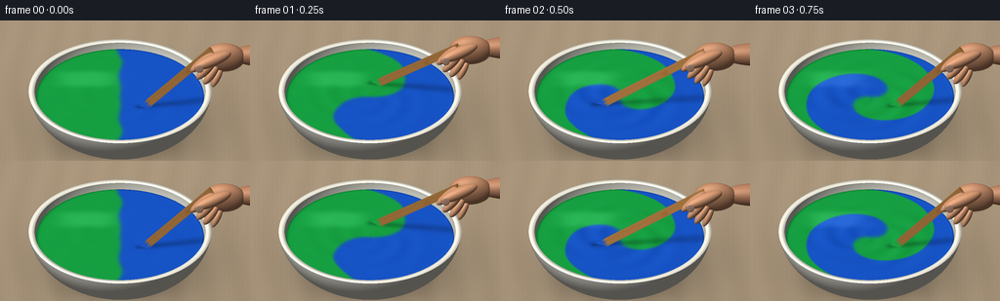

CODING AGENTS AS PIXEL WORLD MODELS
traex/GPT-6.1-Sol · phygen_123
点击播放 · 原生 RGB 像素
逐轮保存的候选
回放视频、检查图与代码变化。
每份候选均可单独播放。实际图片检查记录在下方工具轨迹中。
候选 01播放与检查图
点击播放 · 原生 RGB 像素


展开代码变化
--- 上一保存版本
+++ 本次保存版本
@@ -0,0 +1,235 @@
+from pathlib import Path
+import json
+import numpy as np
+from PIL import Image
+import artifact_io
+
+ROOT=Path(__file__).resolve().parent
+SPEC=json.loads((ROOT/'task_spec.json').read_text())
+S=3; W=SPEC['width']*S; H=SPEC['height']*S
+rng=np.random.default_rng(12)
+Y,X=np.mgrid[0:H,0:W].astype(np.float32)
+X=(X+.5)/S; Y=(Y+.5)/S
+s=.57; c=np.sqrt(1-s*s)
+D=np.array([0,c,-s],np.float32); V=-D
+O=np.stack([X-123, -(Y-108)*s-400*c, -(Y-108)*c+400*s],-1)
+LIGHT=np.array([-.42,-.35,.835],np.float32); LIGHT/=np.linalg.norm(LIGHT)
+noise=rng.normal(0,1,(H,W)).astype(np.float32)
+
+def ellipsoid(o,center,radii):
+ q=(o-np.array(center))/np.array(radii)
+ d=D/np.array(radii)
+ a=np.dot(d,d); b=np.sum(q*d,-1); cc=np.sum(q*q,-1)-1
+ disc=b*b-a*cc
+ root=np.sqrt(np.maximum(disc,0))
+ t0=(-b-root)/a; t1=(-b+root)/a
+ t0=np.where(disc>=0,t0,np.inf); t1=np.where(disc>=0,t1,np.inf)
+ return t0,t1
+
+def points(t):
+ return O+np.where(np.isfinite(t),t,0)[...,None]*D
+
+def shading(p,n,base,shine=0.15,rough=28):
+ nd=np.maximum(0,np.sum(n*LIGHT,-1))
+ ambient=.36+.10*np.maximum(n[...,2],0)
+ half=(LIGHT+V); half/=np.linalg.norm(half)
+ sp=np.maximum(0,np.sum(n*half,-1))**rough
+ out=np.asarray(base)*(ambient[...,None]+nd[...,None]*.62)
+ out+=np.array([255,242,223])*shine*sp[...,None]
+ return out
+
+# An analytic, hollow ceramic bowl. Every visible surface is intersected with the camera rays.
+ttable=(-.3-O[...,2])/D[2]
+p=points(ttable)
+woodx=p[...,0]; woody=p[...,1]
+grain=np.sin(woodx*.20 + 1.5*np.sin(woody*.022)+.8*np.sin(woodx*.027+woody*.004))
+fine=np.sin(woodx*2.7+.5*np.sin(woody*.19))+np.sin(woodx*1.34+woody*.006)
+background=np.zeros((H,W,3),np.float32)+[173,153,126]
+background+=grain[...,None]*2.1+fine[...,None]*.7+noise[...,None]*.65
+# Soft contact shadow, cast away from the upper-left studio light.
+sh=np.exp(-((woodx-13)/93)**2-((woody-9)/83)**2)
+sh2=np.exp(-((woodx)/66)**4-((woody)/57)**4)
+background*= (1-.22*sh-.18*sh2)[...,None]
+background*= (1-.06*((X-125)/190)**2-.025*((Y-65)/100)**2)[...,None]
+static=background.copy(); Z=ttable.copy()
+
+def apply_surface(t,col):
+ global static,Z
+ m=t<Z
+ static[m]=col[m]; Z[m]=t[m]
+
+# Outer, rounded wall, including the substantial front face.
+a,b=ellipsoid(O,[0,0,49],[94,94,64])
+for t in (b,a):
+ p=points(t); valid=(p[...,2]>=0)&(p[...,2]<=43)
+ t=np.where(valid,t,np.inf)
+ n=(p-[0,0,49])/np.array([94**2,94**2,64**2]); n/=np.maximum(np.linalg.norm(n,axis=-1,keepdims=True),1e-9)
+ glaze=np.stack([234+noise*.35,231+noise*.35,219+noise*.35],-1)
+ col=shading(p,n,glaze,.26,43)
+ apply_surface(t,col)
+# Interior wall between the paint and rim.
+a,b=ellipsoid(O,[0,0,49],[88,88,61])
+for t in (a,b):
+ p=points(t); valid=(p[...,2]>=36)&(p[...,2]<=43)
+ t=np.where(valid,t,np.inf)
+ n=-(p-[0,0,49])/np.array([88**2,88**2,61**2]); n/=np.maximum(np.linalg.norm(n,axis=-1,keepdims=True),1e-9)
+ col=shading(p,n,[229,228,215],.12,33)
+ apply_surface(t,col)
+# Rounded, thick lip: a narrow top annulus with a gently rolling normal.
+trim=(43-O[...,2])/D[2]; p=points(trim)
+r=np.hypot(p[...,0],p[...,1]); ro=94*np.sqrt(1-((43-49)/64)**2); ri=88*np.sqrt(1-((43-49)/61)**2)
+u=(r-ri)/(ro-ri); radial=np.sin((u-.5)*np.pi)*.6
+n=np.stack([radial*p[...,0]/np.maximum(r,1),radial*p[...,1]/np.maximum(r,1),np.sqrt(1-radial**2)],-1)
+trim=np.where((r>=ri)&(r<=ro),trim,np.inf)
+apply_surface(trim,shading(p,n,[248,245,230],.26,34))
+
+Tpaint=(36-O[...,2])/D[2]; PP=points(Tpaint)
+PX=PP[...,0]; PY=PP[...,1]; RR=np.hypot(PX,PY)
+R=88*np.sqrt(1-((36-49)/61)**2)
+paintmask=(RR<R)&(Tpaint<Z)
+Zpaint=np.where(paintmask,Tpaint,Z)
+angle=np.arctan2(PY,PX)
+
+def smooth(a,b,x):
+ f=np.clip((x-a)/(b-a),0,1); return f*f*(3-2*f)
+
+def pigment(x,y,t):
+ r=np.hypot(x,y)/R; theta=np.arctan2(y,x)
+ twist=6.5*t*(1-np.clip(r,0,1)**1.3)
+ phase=theta+twist+.035*np.sin(y*.13)*np.exp(-t)
+ diff=.026+.018*t*t
+ frac=.5-.5*np.tanh(np.cos(phase)*r/diff)
+ strength=1-smooth(.65,4.15,t)
+ frac=.5+(frac-.5)*strength
+ # Both equal-volume pigments resolve to a saturated blue-green paint.
+ blue=np.array([20,83,204]); green=np.array([20,165,64]); teal=np.array([16,139,145])
+ pure=blue+(green-blue)*frac[...,None]
+ return pure+(teal-(blue+green)/2)*(1-strength)
+
+# Ray-box intersection for a tangible, flat wooden stirring paddle.
+def paddle(t,tip,grip):
+ end=grip+(grip-tip)/np.linalg.norm(grip-tip)*18
+ axis=(end-tip); length=np.linalg.norm(axis); axis/=length
+ width=np.cross(axis,V); width/=np.linalg.norm(width)
+ normal=np.cross(width,axis); normal/=np.linalg.norm(normal)
+ B=np.stack([width,normal,axis],1)
+ center=(tip+end)/2
+ q=(O-center)@B; d=D@B
+ half=np.array([4.2,1.65,length/2])
+ aa=(-half-q)/d; bb=(half-q)/d
+ lo=np.minimum(aa,bb); hi=np.maximum(aa,bb)
+ near=np.max(lo,-1); far=np.min(hi,-1)
+ hit=(near<=far)&(far>0)
+ ph=q+near[...,None]*d
+ face=np.argmax(lo,-1)
+ norm=np.zeros((H,W,3),np.float32)
+ for k in range(3):
+ m=face==k; norm[m]=B[:,k]*(-np.sign(d[k]))
+ stripe=np.sin(ph[...,0]*3+np.sin(ph[...,2]*.065))*.8+np.sin(ph[...,0]*1.4+.4*np.sin(ph[...,2]*.13))*2.7
+ knot=np.exp(-((ph[...,0]-1.1)/2)**2-((ph[...,2]-18)/4)**2)
+ col=np.zeros_like(norm)+[184,129,69]
+ col+=stripe[...,None]*np.array([1, .72,.42]); col-=knot[...,None]*12
+ pos=points(near)
+ col=shading(pos,norm,col,.11,29)
+ along=ph[...,2]+length/2
+ wet=1-smooth(9,15,along+np.sin(ph[...,0]*1.8)*1.2)
+ wetcolor=pigment(pos[...,0],pos[...,1],t)
+ col=col*(1-.94*wet[...,None])+wetcolor*.94*wet[...,None]
+ col+=noise[...,None]*.35
+ return np.where(hit,near,np.inf),col,axis
+
+# Softly shaded anatomical primitives for a cropped right hand holding the paddle.
+def skin_ell(center,radii,B=None,color=(196,140,107)):
+ if B is None: B=np.eye(3)
+ q=(O-center)@B/np.array(radii); dd=D@B/np.array(radii)
+ aa=np.dot(dd,dd); bb=np.sum(q*dd,-1); cc=np.sum(q*q,-1)-1
+ disc=bb*bb-aa*cc
+ near=(-bb-np.sqrt(np.maximum(disc,0)))/aa
+ near=np.where(disc>=0,near,np.inf)
+ loc=(O-center+np.where(np.isfinite(near),near,0)[...,None]*D)@B
+ n=(loc/np.array(radii)**2)@B.T
+ n/=np.maximum(np.linalg.norm(n,axis=-1,keepdims=True),1e-9)
+ pos=points(near)
+ col=shading(pos,n,color,.10,17)
+ # Minute, non-distracting skin variation rather than a perfectly plastic surface.
+ tex=np.sin(pos[...,0]*3.5+pos[...,2]*1.7)*np.sin(pos[...,1]*3.1)*.7+noise*.5
+ col+=tex[...,None]
+ col+=np.maximum(0,1-np.sum(n*V,-1))[...,None]*np.array([5,1,0])
+ return near,col
+
+def finger(a,b,rad,color=(203,147,111)):
+ a=np.array(a); b=np.array(b); axis=(b-a); length=np.linalg.norm(axis); axis/=length
+ u=np.cross(axis,[0,1,0]); u/=np.linalg.norm(u); v=np.cross(axis,u)
+ B=np.stack([u,v,axis],1)
+ return skin_ell((a+b)/2,[rad,rad,length/2+rad*.55],B,color)
+
+frames=[]
+for f in range(SPEC['frames']):
+ t=f/SPEC['fps']
+ # More than two revolutions a second; the low-rate samples still describe a coherent circular path.
+ phi=-.65+2*np.pi*1.35*t
+ radius=27*(1-.30*smooth(3.6,4.7,t))
+ tx=radius*np.cos(phi); ty=radius*np.sin(phi)
+ tip=np.array([tx,ty,31.7])
+ grip=np.array([78+.20*tx,-25+.20*ty,103+2*np.sin(phi)])
+ img=static.copy()
+ zz=Zpaint.copy()
+ col=pigment(PX,PY,t)
+ def height(x,y):
+ rr=np.hypot(x,y); rn=rr/R; a=np.arctan2(y,x)
+ twist=6.5*t*(1-np.clip(rn,0,1)**1.3)
+ # Thick paint has small folded ridges; these relax without vanishing abruptly.
+ activity=.22+.78*smooth(0,.6,t)
+ phase=a+twist
+ bands=.18*np.cos(2*phase)*np.exp(-((rn-.52)/.35)**2)*(1-smooth(2.7,4.4,t))
+ wake=.30*np.sin(3*(a-phi)+rn*20-2*t)*np.exp(-((rn-.43)/.32)**2)*activity
+ center=-.48*np.exp(-(rn/.24)**2)*activity
+ edge=.55*np.exp(-(R-rr)/1.5)
+ subtle=.055*np.sin(x*.17+y*.11)*np.sin(y*.18)
+ return bands+wake+center+edge+subtle
+ dx=(height(PX+.35,PY)-height(PX-.35,PY))/.7
+ dy=(height(PX,PY+.35)-height(PX,PY-.35))/.7
+ n=np.stack([-dx,-dy,np.ones_like(dx)],-1); n/=np.linalg.norm(n,axis=-1,keepdims=True)
+ diffuse=np.maximum(0,np.sum(n*LIGHT,-1))
+ col*= (.53+.48*diffuse)[...,None]
+ # Broad reflected studio window, modulated by the glossy surface folds.
+ window=np.exp(-((PX+34)/30)**4-((PY-32)/14)**4)
+ gloss=np.maximum(0,.48+.5*(-dx)+.8*dy)
+ col+=window[...,None]*gloss[...,None]*np.array([39,45,43])
+ spec=np.maximum(0,np.sum(n*np.array([-.12,.06,.991]),-1))**75
+ col+=spec[...,None]*np.array([8,12,13])
+ # Shadow of the wooden paddle on the liquid, softened by the large light source.
+ aa=tip[:2]-(tip[2]-36)*LIGHT[:2]/LIGHT[2]
+ bb=grip[:2]-(grip[2]-36)*LIGHT[:2]/LIGHT[2]
+ ab=bb-aa
+ proj=np.clip(((PX-aa[0])*ab[0]+(PY-aa[1])*ab[1])/np.dot(ab,ab),0,1)
+ dist=np.hypot(PX-aa[0]-proj*ab[0],PY-aa[1]-proj*ab[1])
+ shadow=np.exp(-(dist/(3.8+4*proj))**2)*(.24-.10*proj)
+ col*= (1-shadow)[...,None]
+ edge=smooth(R-2.6,R,RR)
+ col*= (1-.18*edge)[...,None]
+ col+=noise[...,None]*.25
+ img[paintmask]=col[paintmask]
+ # Partial immersion is handled by the same depth comparison as the bowl.
+ st,sc,axis=paddle(t,tip,grip)
+ m=st<zz; img[m]=sc[m]; zz[m]=st[m]
+ def draw_hand(a):
+ tt,cc=a; m=tt<zz; img[m]=cc[m]; zz[m]=tt[m]
+ # Wrist and forearm disappear naturally out of the right side of the shot.
+ draw_hand(finger(grip+[37,7,1],grip+[102,10,-1],12,(184,130,99)))
+ draw_hand(skin_ell(grip+[24,3,1],[22,11,16],color=(197,141,106)))
+ # Four curled fingers are offset down the grip; the thumb closes across them.
+ draw_hand(finger(grip+[21,-3,-10],grip+[13,-11,-24],3.6))
+ draw_hand(finger(grip+[17,-4,-5],grip+[5,-13,-19],4.4))
+ draw_hand(finger(grip+[14,-5,2],grip+[-2,-14,-12],4.8))
+ draw_hand(finger(grip+[12,-5,10],grip+[-8,-14,-3],4.9))
+ draw_hand(finger(grip+[28,-7,12],grip+[-3,-18,4],6.3,(211,151,113)))
+ # Subtle thumbnail with a rounded free edge, not an outlined cartoon nail.
+ draw_hand(skin_ell(grip+[-1,-22.8,4.4],[4.1,.65,4.8],color=(221,176,150)))
+ # Camera rendering: softly roll off highlights and downsample antialiased geometry.
+ img=np.clip(img,0,255).astype(np.uint8)
+ frame=Image.fromarray(img).resize((SPEC['width'],SPEC['height']),Image.Resampling.LANCZOS)
+ frames.append(np.asarray(frame))
+ print(f'Rendered frame {f+1}/{SPEC["frames"]}',flush=True)
+artifact_io.save(np.stack(frames),ROOT)
+print('Saved RGB video artifacts.',flush=True)
可观测工具轨迹
实际执行的命令与返回图片。
命令 1exit 0
/bin/bash -lc 'ls -la && cat prompt.txt && cat GENERATION_RULES.md && cat task_spec.json'
命令 2exit 0
/bin/bash -lc 'cat artifact_io.py'
命令 3exit 0
/bin/bash -lc "cat > generate.py <<'PY'
from pathlib import Path
import json
import numpy as np
from PIL import Image
import artifact_io
ROOT=Path(__file__).resolve().parent
SPEC=json.loads((ROOT/'task_spec.json').read_text())
S=3; W=SPEC['width']*S; H=SPEC['height']*S
rng=np.random.default_rng(12)
Y,X=np.mgrid[0:H,0:W].astype(np.float32)
X=(X+.5)/S; Y=(Y+.5)/S
s=.57; c=np.sqrt(1-s*s)
D=np.array([0,c,-s],np.float32); V=-D
O=np.stack([X-123, -(Y-108)*s-400*c, -(Y-108)*c+400*s],-1)
LIGHT=np.array([-.42,-.35,.835],np.float32); LIGHT/=np.linalg.norm(LIGHT)
noise=rng.normal(0,1,(H,W)).astype(np.float32)
def ellipsoid(o,center,radii):
q=(o-np.array(center))/np.array(radii)
d=D/np.array(radii)
a=np.dot(d,d); b=np.sum(q*d,-1); cc=np.sum(q*q,-1)-1
disc=b*b-a*cc
root=np.sqrt(np.maximum(disc,0))
t0=(-b-root)/a; t1=(-b+root)/a
t0=np.where(disc>=0,t0,np.inf); t1=np.where(disc>=0,t1,np.inf)
return t0,t1
def points(t):
return O+np.where(np.isfinite(t),t,0)[...,None]*D
def shading(p,n,base,shine=0.15,rough=28):
nd=np.maximum(0,np.sum(n*LIGHT,-1))
ambient=.36+.10*np.maximum(n[...,2],0)
half=(LIGHT+V); half/=np.linalg.norm(half)
sp=np.maximum(0,np.sum(n*half,-1))**rough
out=np.asarray(base)*(ambient[...,None]+nd[...,None]*.62)
out+=np.array([255,242,223])*shine*sp[...,None]
return out
# An analytic, hollow ceramic bowl. Every visible surface is intersected with the camera rays.
ttable=(-.3-O[...,2])/D[2]
p=points(ttable)
woodx=p[...,0]; woody=p[...,1]
grain=np.sin(woodx*.20 + 1.5*np.sin(woody*.022)+.8*np.sin(woodx*.027+woody*.004))
fine=np.sin(woodx*2.7+.5*np.sin(woody*.19))+np.sin(woodx*1.34+woody*.006)
background=np.zeros((H,W,3),np.float32)+[173,153,126]
background+=grain[...,None]*2.1+fine[...,None]*.7+noise[...,None]*.65
# Soft contact shadow, cast away from the upper-left studio light.
sh=np.exp(-((woodx-13)/93)**2-((woody-9)/83)**2)
sh2=np.exp(-((woodx)/66)**4-((woody)/57)**4)
background*= (1-.22*sh-.18*sh2)[...,None]
background*= (1-.06*((X-125)/190)**2-.025*((Y-65)/100)**2)[...,None]
static=background.copy(); Z=ttable.copy()
def apply_surface(t,col):
global static,Z
m=t<Z
static[m]=col[m]; Z[m]=t[m]
# Outer, rounded wall, including the substantial front face.
a,b=ellipsoid(O,[0,0,49],[94,94,64])
for t in (b,a):
p=points(t); valid=(p[...,2]>=0)&(p[...,2]<=43)
t=np.where(valid,t,np.inf)
n=(p-[0,0,49])/np.array([94**2,94**2,64**2]); n/=np.maximum(np.linalg.norm(n,axis=-1,keepdims=True),1e-9)
glaze=np.stack([234+noise*.35,231+noise*.35,219+noise*.35],-1)
col=shading(p,n,glaze,.26,43)
apply_surface(t,col)
# Interior wall between the paint and rim.
a,b=ellipsoid(O,[0,0,49],[88,88,61])
for t in (a,b):
p=points(t); valid=(p[...,2]>=36)&(p[...,2]<=43)
t=np.where(valid,t,np.inf)
n=-(p-[0,0,49])/np.array([88**2,88**2,61**2]); n/=np.maximum(np.linalg.norm(n,axis=-1,keepdims=True),1e-9)
col=shading(p,n,[229,228,215],.12,33)
apply_surface(t,col)
# Rounded, thick lip: a narrow top annulus with a gently rolling normal.
trim=(43-O[...,2])/D[2]; p=points(trim)
r=np.hypot(p[...,0],p[...,1]); ro=94*np.sqrt(1-((43-49)/64)**2); ri=88*np.sqrt(1-((43-49)/61)**2)
u=(r-ri)/(ro-ri); radial=np.sin((u-.5)*np.pi)*.6
n=np.stack([radial*p[...,0]/np.maximum(r,1),radial*p[...,1]/np.maximum(r,1),np.sqrt(1-radial**2)],-1)
trim=np.where((r>=ri)&(r<=ro),trim,np.inf)
apply_surface(trim,shading(p,n,[248,245,230],.26,34))
Tpaint=(36-O[...,2])/D[2]; PP=points(Tpaint)
PX=PP[...,0]; PY=PP[...,1]; RR=np.hypot(PX,PY)
R=88*np.sqrt(1-((36-49)/61)**2)
paintmask=(RR<R)&(Tpaint<Z)
Zpaint=np.where(paintmask,Tpaint,Z)
angle=np.arctan2(PY,PX)
def smooth(a,b,x):
f=np.clip((x-a)/(b-a),0,1); return f*f*(3-2*f)
def pigment(x,y,t):
r=np.hypot(x,y)/R; theta=np.arctan2(y,x)
twist=6.5*t*(1-np.clip(r,0,1)**1.3)
phase=theta+twist+.035*np.sin(y*.13)*np.exp(-t)
diff=.026+.018*t*t
frac=.5-.5*np.tanh(np.cos(phase)*r/diff)
strength=1-smooth(.65,4.15,t)
frac=.5+(frac-.5)*strength
# Both equal-volume pigments resolve to a saturated blue-green paint.
blue=np.array([20,83,204]); green=np.array([20,165,64]); teal=np.array([16,139,145])
pure=blue+(green-blue)*frac[...,None]
return pure+(teal-(blue+green)/2)*(1-strength)
# Ray-box intersection for a tangible, flat wooden stirring paddle.
def paddle(t,tip,grip):
end=grip+(grip-tip)/np.linalg.norm(grip-tip)*18
axis=(end-tip); length=np.linalg.norm(axis); axis/=length
width=np.cross(axis,V); width/=np.linalg.norm(width)
normal=np.cross(width,axis); normal/=np.linalg.norm(normal)
B=np.stack([width,normal,axis],1)
center=(tip+end)/2
q=(O-center)@B; d=D@B
half=np.array([4.2,1.65,length/2])
aa=(-half-q)/d; bb=(half-q)/d
lo=np.minimum(aa,bb); hi=np.maximum(aa,bb)
near=np.max(lo,-1); far=np.min(hi,-1)
hit=(near<=far)&(far>0)
ph=q+near[...,None]*d
face=np.argmax(lo,-1)
norm=np.zeros((H,W,3),np.float32)
for k in range(3):
m=face==k; norm[m]=B[:,k]*(-np.sign(d[k]))
stripe=np.sin(ph[...,0]*3+np.sin(ph[...,2]*.065))*.8+np.sin(ph[...,0]*1.4+.4*np.sin(ph[...,2]*.13))*2.7
knot=np.exp(-((ph[...,0]-1.1)/2)**2-((ph[...,2]-18)/4)**2)
col=np.zeros_like(norm)+[184,129,69]
col+=stripe[...,None]*np.array([1, .72,.42]); col-=knot[...,None]*12
pos=points(near)
col=shading(pos,norm,col,.11,29)
along=ph[...,2]+length/2
wet=1-smooth(9,15,along+np.sin(ph[...,0]*1.8)*1.2)
wetcolor=pigment(pos[...,0],pos[...,1],t)
col=col*(1-.94*wet[...,None])+wetcolor*.94*wet[...,None]
col+=noise[...,None]*.35
return np.where(hit,near,np.inf),col,axis
# Softly shaded anatomical primitives for a cropped right hand holding the paddle.
def skin_ell(center,radii,B=None,color=(196,140,107)):
if B is None: B=np.eye(3)
q=(O-center)@B/np.array(radii); dd=D@B/np.array(radii)
aa=np.dot(dd,dd); bb=np.sum(q*dd,-1); cc=np.sum(q*q,-1)-1
disc=bb*bb-aa*cc
near=(-bb-np.sqrt(np.maximum(disc,0)))/aa
near=np.where(disc>=0,near,np.inf)
loc=(O-center+np.where(np.isfinite(near),near,0)[...,None]*D)@B
n=(loc/np.array(radii)**2)@B.T
n/=np.maximum(np.linalg.norm(n,axis=-1,keepdims=True),1e-9)
pos=points(near)
col=shading(pos,n,color,.10,17)
# Minute, non-distracting skin variation rather than a perfectly plastic surface.
tex=np.sin(pos[...,0]*3.5+pos[...,2]*1.7)*np.sin(pos[...,1]*3.1)*.7+noise*.5
col+=tex[...,None]
col+=np.maximum(0,1-np.sum(n*V,-1))[...,None]*np.array([5,1,0])
return near,col
def finger(a,b,rad,color=(203,147,111)):
a=np.array(a); b=np.array(b); axis=(b-a); length=np.linalg.norm(axis); axis/=length
u=np.cross(axis,[0,1,0]); u/=np.linalg.norm(u); v=np.cross(axis,u)
B=np.stack([u,v,axis],1)
return skin_ell((a+b)/2,[rad,rad,length/2+rad*.55],B,color)
frames=[]
for f in range(SPEC['frames']):
t=f/SPEC['fps']
# More than two revolutions a second; the low-rate samples still describe a coherent circular path.
phi=-.65+2*np.pi*1.35*t
radius=27*(1-.30*smooth(3.6,4.7,t))
tx=radius*np.cos(phi); ty=radius*np.sin(phi)
tip=np.array([tx,ty,31.7])
grip=np.array([78+.20*tx,-25+.20*ty,103+2*np.sin(phi)])
img=static.copy()
zz=Zpaint.copy()
col=pigment(PX,PY,t)
def height(x,y):
rr=np.hypot(x,y); rn=rr/R; a=np.arctan2(y,x)
twist=6.5*t*(1-np.clip(rn,0,1)**1.3)
# Thick paint has small folded ridges; these relax without vanishing abruptly.
activity=.22+.78*smooth(0,.6,t)
phase=a+twist
bands=.18*np.cos(2*phase)*np.exp(-((rn-.52)/.35)**2)*(1-smooth(2.7,4.4,t))
wake=.30*np.sin(3*(a-phi)+rn*20-2*t)*np.exp(-((rn-.43)/.32)**2)*activity
center=-.48*np.exp(-(rn/.24)**2)*activity
edge=.55*np.exp(-(R-rr)/1.5)
subtle=.055*np.sin(x*.17+y*.11)*np.sin(y*.18)
return bands+wake+center+edge+subtle
dx=(height(PX+.35,PY)-height(PX-.35,PY))/.7
dy=(height(PX,PY+.35)-height(PX,PY-.35))/.7
n=np.stack([-dx,-dy,np.ones_like(dx)],-1); n/=np.linalg.norm(n,axis=-1,keepdims=True)
diffuse=np.maximum(0,np.sum(n*LIGHT,-1))
col*= (.53+.48*diffuse)[...,None]
# Broad reflected studio window, modulated by the glossy surface folds.
window=np.exp(-((PX+34)/30)**4-((PY-32)/14)**4)
gloss=np.maximum(0,.48+.5*(-dx)+.8*dy)
col+=window[...,None]*gloss[...,None]*np.array([39,45,43])
spec=np.maximum(0,np.sum(n*np.array([-.12,.06,.991]),-1))**75
col+=spec[...,None]*np.array([8,12,13])
# Shadow of the wooden paddle on the liquid, softened by the large light source.
aa=tip[:2]-(tip[2]-36)*LIGHT[:2]/LIGHT[2]
bb=grip[:2]-(grip[2]-36)*LIGHT[:2]/LIGHT[2]
ab=bb-aa
proj=np.clip(((PX-aa[0])*ab[0]+(PY-aa[1])*ab[1])/np.dot(ab,ab),0,1)
dist=np.hypot(PX-aa[0]-proj*ab[0],PY-aa[1]-proj*ab[1])
shadow=np.exp(-(dist/(3.8+4*proj))**2)*(.24-.10*proj)
col*= (1-shadow)[...,None]
edge=smooth(R-2.6,R,RR)
col*= (1-.18*edge)[...,None]
col+=noise[...,None]*.25
img[paintmask]=col[paintmask]
# Partial immersion is handled by the same depth comparison as the bowl.
st,sc,axis=paddle(t,tip,grip)
m=st<zz; img[m]=sc[m]; zz[m]=st[m]
def draw_hand(a):
tt,cc=a; m=tt<zz; img[m]=cc[m]; zz[m]=tt[m]
# Wrist and forearm disappear naturally out of the right side of the shot.
draw_hand(finger(grip+[37,7,1],grip+[102,10,-1],12,(184,130,99)))
draw_hand(skin_ell(grip+[24,3,1],[22,11,16],color=(197,141,106)))
# Four curled fingers are offset down the grip; the thumb closes across them.
draw_hand(finger(grip+[21,-3,-10],grip+[13,-11,-24],3.6))
draw_hand(finger(grip+[17,-4,-5],grip+[5,-13,-19],4.4))
draw_hand(finger(grip+[14,-5,2],grip+[-2,-14,-12],4.8))
draw_hand(finger(grip+[12,-5,10],grip+[-8,-14,-3],4.9))
draw_hand(finger(grip+[28,-7,12],grip+[-3,-18,4],6.3,(211,151,113)))
# Subtle thumbnail with a rounded free edge, not an outlined cartoon nail.
draw_hand(skin_ell(grip+[-1,-22.8,4.4],[4.1,.65,4.8],color=(221,176,150)))
# Camera rendering: softly roll off highlights and downsample antialiased geometry.
img=np.clip(img,0,255).astype(np.uint8)
frame=Image.fromarray(img).resize((SPEC['width'],SPEC['height']),Image.Resampling.LANCZOS)
frames.append(np.asarray(frame))
print(f'Rendered frame {f+1}/{SPEC[\"frames\"]}',flush=True)
artifact_io.save(np.stack(frames),ROOT)
print('Saved RGB video artifacts.',flush=True)
PY
OPENBLAS_NUM_THREADS=1 python generate.py"命令 4exit 0
/bin/bash -lc "ls -lh pixels.npz index.html inspection.png generate.py && python - <<'PY'
import numpy as np
from pathlib import Path
p=np.load('pixels.npz')['pixels']
assert p.shape==(144,256,20)
assert len(list(Path('frames').glob('*.png')))==20
print('Verified: 20 RGB frames, 256Ã144, 4 fps, 5 seconds.')
PY"视觉工具实际返回图片 1

保存候选 1 份；完成命令 4 次；可验证图片返回 1 张。原始 API 响应与完整日志保留在本地。